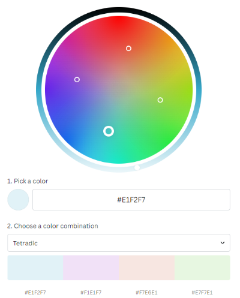

The main purpose of my website is to give readers a little introduction about myself, where I share my interests and hobbies, including my past and future experiences with technology. My design consists of a simplistic layout of rows and columns which I utilised in order to prevent overcomplication, making it easy to navigate through the code when styling with CSS. I also did this in order to make it easier for less tech-savvy viewers to navigate through my site. I further used a neutral color palette in order to make the site easy to read without causing eye strain. Overall, the site functions as intended, with elements working properly when viewed via both mobile and desktop resolutions.
My site was very time consuming to construct as I had extremely poor HTML formatting at the start, where things were not working as intended due to missing or misaligned ending tags. Once I reformatted the site, it become much easier to navigate and read through the code, with functions working as intended. One thing that I believe could have been improved is the naming of classes. I have a few classes with odd names such as "childhoodparagraph" and "object1", which in the case of a small project did not cause many issues. However, if my website was to be more complex or improved further down the line, it has the potential to become a problem as it may cause larger issues such as mistakes when writing code due to not knowing which classes correspond with each page, leading to a waste of time.
Technical Aspects
In accordance with the task rules, my site has been constructed using the following structure:
FILE NAME
FILE TYPE
DESCRIPTION
websystems
folder
This is the main folder which contains all other HTML and CSS files, as well as an images folder.
images
folder
This is a sub folder inside the websystems folder which contains all image files.
index.html
HTML
This is the home page of the site. Users are prompted with this screen upon arrival. This file is inside the websystems folder.
past.html
HTML
This is the past page, which discusses my past experiences with technology from childhood, school to adulthood. This file is inside the websystems folder.
future.html
HTML
This is the future page, which discusses my future ambitions and career in technology. This file is inside the websystems folder.
comments.html
HTML
This is the page you are currently viewing, which discusses the creation of this site. This file is inside the websystems folder.
websystems.css
CSS
This is the stylesheet which styles the webpage through formatting, colour, etc. This file is inside the websystems folder.
All Pages
Each webpage begins with the default HTML code, defined by: <!DOCTYPE html>: This tells the browser we are working with HTML and HTML file types.
<html lang="en">: This defines the browser language to English, which can help people such as those with a disability using text to speech, more about that later.
<meta charset="UTF-8"> This tells the browser to use the default charater type.
<meta name="viewport" content="width=device-width, initual-scale=1.0"> This tells the browser to fit the webpage to screen (user device width) and sets the scale to be full resolution (1.0). Note this code does not need an ending tag.
<link rel="stylesheet" href="websystems.css"> This links each HTML page to the CSS stylesheet.
<title>COMMENTS</title> This is the text inside the browser tab. Each tab a different title, labelled "PAST", "COMMENTS", "FUTURE", INDEX".
The layout of each page consists of a navbar, header and footer. The navbar is defined by a class - <nav class="index-navbar"> It consists of a div with an image (UTS logo) <img src="images/UTSLogo.png" alt="UTSLogo"> and an unordered list classed “nav-links”, which was used to contain a list of the hypertext referenced links to all other HTML pages.
HTML: <ul class="nav-links"> <li><a href="index.html">HOME</a></li> <li><a href="past.html">PAST</a></li> <li><a href="future.html">FUTURE</a></li> lt;li><a href="comments.html" id="active">COMMENTS</a></li> </ul>
The navbar is further styled in CSS utilising the following properties: .index-navbar { background-color: #e1f2f7; width: 100%; display: flex; This enables flexbox layout allowing for hyperlinks and image position to be adjusted accordingly in rows.
justify-content: space-between; This spaces the text and logo out evenly on the left and right. align-items: center; puts text and UTS logo image in the middle of the navbar. padding: 10px 20px; This will add an inner border of space inside the navbar. flex-wrap: wrap; this allows for the text to wrap around the logo when there is no longer any space available once the screen is resized. border-bottom: 2px solid #eb3a70; } adds a hot pink coloured border to the bottom of the navbar. This creates an aesthetic separation between the navbar and header. More on aesthetics will be covered further down the comments section.
The list is also styled to override default list ordering settings (eg. 1. Home, 2. Past, etc) using list-style: none;. It is also assigned with display: flex, which positions the text on the main axis (x axis) side by side. A margin of 20px; is further added to the list to add space between each word and overflow-x: visible is applied to override the default setting and show text in case it overflows due to a screen resize. Each web page has an id element “active” corresponding to itself, highlighting that the user is actively on the corresponding webpage by colouring the text red through CSS styling. There is also a red hover effect over each navigation hyperlink made using an ease-in-out transition of 0.5s.
HTML: <li><a href="comments.html" id="active">COMMENTS</a></li>
CSS:
index-navbar .nav-links #active {
color: #ef0d50; }
Hover Effect: .index-navbar .nav-links li a:hover {
color: #ef0d50;
transition: ease-in-out 0.5s; }
The header is the same on every page, utilising <h1> tags to name each hyperlink. It is styled with CSS with the following properties below such as font-wight and text-allign to add emphasis to the text by making it stand out with large, centered and bold letters. It also applies a padding of 25px to add inner space between the heading and its text element.
background-color: #f7e6e1;
text-align: center;
padding: 25px;
font-family: sans-serif;
font-weight: bold;
width: 100%;
Like the header, the footer is the same on every page, styled in CSS with the same properties except changing the colour to complement the navigation bar. The only difference in property is the addition of font-family: Segoe UI to complement the rest of the site.
background-color: #f7e6e1;
text-align: center;
padding: 20px;
font-size: large;
font-family: Segoe UI, sans-serif;
font-weight: bold;
width: 100%;
Default CSS Settings
As I am using the flexbox element to style my webpage (more on that in a moment), I chose to override default (*) browser settings.
* {
margin: 0; This setting overrides default margin browser setting of 8px padding: 0; This ensures that default padding is set to 0. box-sizing: border-box; This setting includes any element's border and padding in the total width and height. This was done in order to be able to make even spaces using padding between elements such as headings, paragraphs and images. overflow-x: hidden; } This fixes horizontal scrolling (x), also hides any elements flowing off the screen by default
I also set default settings for the body of each webpage: body {
display: flex; This will enable flexbox, creating a vertical and horizontal axis for elements. flex-direction: column; this will set the main axis to the y axis and position all elements within the body to stack vertically. align-items: center; } The webpage is designed to be symmetrical in order to achieve simplicity and make it easier to read.
Flexbox Layout
As previously mentioned, I chose to use the CSS flexbox styling elements and HTML div classes to create the layout for the main content of my website. I created a div classed "section," which contains 2 child classes "row" and "col", which act as rows and columns for styling elements inside the webpage. The CSS style elements for rows and columns are:
.row {
display: flex; Creates a vertical and horizontal axis as previously mentioned. flex-wrap: nowrap; Does not allow wrapping of any elements. justify-content: center; Centre items in the middle of the x axis. align-items: center; Centres elements in the middle of the cross axis (centre of screen). width: 100%; } Takes up 100% of the screen width.
.col {
display: flex; same as above. justify-content: center; same as above. width: 50% } Takes up 50% of the screen width.
Flexbox Example
row 1, column 1
row 1, column 2
row 1, column 3
row 1, column 4
row 2, column 1
row 2, column 2
Page Structure Using Flexbox
Using the flexbox concept, I created the index page with the same structure, using divs to create one row and 3 columns. The divs are styled under a new div class as a child of the column div named "object3".
<div class="section"> .<div class="row"> ..<div class="col"> ...<div class="object3">
.<div class="col"> ..<div class="object3">
.<div class="col"> ..<div class="object3">
The past and future pages have the exact same layout, using a section div containing a row div and a div called "ChildhoodParagraph" to contain a block of text and an image beside it. It essentially acts as the column div, with a different name due to styling differences. Underneath this, more divs are defined by div "row" with two div "col"s , with a third div named "object1" as the child to the column div used to apply style elements.
<div class="section"> .<div class="row"> ..<div class="ChildhoodParagraph">
Note: Inside div "ChildhoodParagraph" are elements such as paragraphs, headings and images.
Note: Inside div "object1" are elements such as paragraphs, headings and images.
Changing Resolution - Use of @media
One of the requirements was for the page to properly resize for viewers on smaller screen sizes such as small monitors, tablets or mobile devices. I achieved this utilising the @media element in CSS combined with the "row" and "col" divs. I assigned the following properties:
@media (max-width: 900px) { ..row { ..flex-direction: column; } When the page rescales to less than 900px, the container layout will stack all rows into columns.
..main { ..width: 100% } Sets the width of <main> to 100%, ensuring all elements inside it take up the whole screen space.
..col { ..width: 100% } Sets the width of <div> col to 100%, ensuring it takes up the whole screen space.
}
Aesthetics
The aesthetic that I was going for for this website was minimalistic, using a neutral colour palette with minimal items on the screen. I wanted the site to be easy to read, hence the choice of these colours. I created the colour using a tetratic colour combination from the light blue colour. The images below depict the main colours which were used for the header, footer, navbar and boxes containing information on the past, index and future pages. Other colours such as a pinkish red and hot pink were also used for hover elements to complement the neutral colour palette. This is depicted in the second image below.

Index Page
Furthermore, each page was created to complement one another, following the neutral palette colour scheme and designed through a minimalistic approach. The index page, consisting of 3 container boxes of information and images was styled using the following properties:
.col .object3 { background-color: #f7e6e1;This colour is complementary to the navbar, which creates a higher contrast brings more vibrance to the page. As the "index" page is the home page of the website, I thought it would be more appropriate to use complementary colours to capture the viewer's attention and establish the theme of minimalism and simplicity.
border-width: 5px; This creates a border-width of 5 pixels.
border-color: #eb3a70; This sets the border-colour to be a hot pink colour. border-radius: 50px; This will round the corners of each box, including images. Studies have revealed that rounded corners are "psychologically associated with a sense of safety, approachability and friendliness." (Turner, L, 2022, April 7.)
margin: 10px; Sets a margin of 10px, creating outer space between elements on the page.
height: auto; The height of each box will automatically resize when it is about to run out of space, meaning that a set height does not have to be set for each box. This ensures that the page is visually appealing by having no items running off the screen, or vertical/horizontal scrolling occurring.
width: 100%; This makes the box take up 100% of the width of the <main> area, which is set to 80%.
transition: ease-in-out 0.5s; Accompanied with a hover element with a light grey shadow, this will create a 0.5s transition between hovering over the container box. This makes the page more aesthetically pleasing for viewers due to the nice addition of an satisfying interactive element.
display: flex; As previously mentioned, this enables flexbox layout, allowing for images and text to be adjusted accordingly in rows and columns.
flex-direction: column; This specifies that the direction of flexible items such as images and text will be in a column layout as opposed to a row. Since I have used 3 boxes, they will appear next to each other horizontally as opposed to stacking on top of one another.
align-items: center; } Aligns all items in the centre of the box container.
Furthermore, the images on the index page complement the container box in order to uphold the neutral, minimalist aesthetic. They have the exact same properties, however using diferent ID names in the event that I wanted to change any features later down the line. They are styled with the following properties:
.col .object3 #IndexImgProperties { width: 50%; This makes the images smaller, creating an appropriate image-to-text size ratio. It would be innapropriate to have large images overpowering the text or vise versa, as this would cause distractions on the webpage, which would not be a minimalist approach. This would also be considered poor web design.
flex-shrink: 0; This feature will not wrap the content, meaning it will keep the image's size by retaining its width in the event of rescaling.
border-radius: 30px; As previously mentioned, this will ruond the corners of each image, upholding the webpage style.
border-width: 50px; This will set a border width of 50px.
box-shadow: 5px 5px 5px 5px rgba(0, 0, 0, 0.2); This creates a shadow behind the image, giving the illusion that it pops off the page.
margin-bottom: 30px; } This creates space betwee the bottom of the "object3" box and the image, utilising clean space to avoid element clutter.
The <p> element is also styled in CSS to complement the image, with the font-size: 17px; and text-align: center; properties applied to it.
Past and Future Pages
The past and future pages have been styled in CSS using almost the exact same properties, except with the exception of minor colour changes. The layout changes slightly, as previously explained above, with text and an image, then two boxes underneath containing more text and an image each.
The CSS code for the image and text boxes is:
.section { padding: 10px 0px 10px 0px; Creates inner space within the .section class.
margin-left: 2vw; Sets the margin on the left for content inside the .section class to the viewport width.
margin-right: 2vw; Sets the margin on the right for content inside the .section class to the viewport width.
display: flex; flex-direction: column; align-items: center; }
.section h2 { padding: 15px 0px 15px 0px; Creates inner space for the heading 2 element within the .section class.
width: 100%; text-align: center; font-family: Segoe UI, sans-serif; ensures that the font and font style is the same throughout the whole site. The use of sans-serif also fits the soft website style, as it gets rid of small harsh lines attached to letters.
font-weight: bold; }
.section p { font-family: Segoe UI, sans-serif; } same as above.
Plain Paragraph and Image .section .ChildhoodParagraph { This is the paragraph at the top of both pages.
margin-top: 20px; Creates outer space between the text element and other elements on the page.
font-size: 20px; Sets the text font to an appropriate size in relaton to the image next to the text.
width: auto; In the case of screen resizing, the width of the text will automatically resize and fill as much as space as it needs.
border-style: none; I wanted to achieve the look of simple, plain black text on a white background with no other elements, therefore achieving minimalism.
flex: 1; } allows the paragraph to take up the remaining screen space by wrapping in the event of screen resizing.
#supertuxImg { This SuperTux image on the past page was specifically chosen for this part of the webpage as the various shades of blue complement the colours of the webpage, which makes the image pop by adding more vibrance to the page.
max-width: 100%; Indicates that the max width of the SuperTux image is 100%.
width: 50%; Sets the width of the image to 50%, which is appropriate sizing in relation to the font size.
border-radius: 30px; } Rounds the corners of the image to match the rest of the site.
Other images such as the Cybersecurity image and Learning to Code image were also strategically used to match the colour theme, as they both contain blue and purple/pink accents.
All other images have the same image properties as explained above, with minor width % changes to account for difference in image dimensions.
Container Boxes (Bottom of Past and Future Pages)
.col .object1 { background-color: #F7E1F2; This changes the colour of the box containers to a light pink colour, which is the same colour as the header. As the (object1) container boxes are underneath a box of plain text and an image, I felt it was appropriate to use this colour as it is further down on the page, as it adds a sense of uniqueness from the index page, however still using a neutral colour palette. All other properties below have already been explained.
border-width: 5px; border-radius: 50px; margin: 10px; height: auto; width: 100%; transition: ease-in-out 0.5s; display: flex; flex-direction: column; align-items: center;}
There is also a hover animation which is applied to both boxes:
.col .object1:hover { box-shadow: 5px 5px 5px 5px rgba(0, 0, 0, 0.2); same as mentioned earlier, gives a shadow to the boxes when hovered.
transition: ease-in-out 0.5s; } same as mentioned earlier.
Accessibility
As there is no audio content on my web page, a person with hearing disability would not have any issues in using my site. Therefore, I have constructed my site with accessbility in mind, specifically with the main focus being to cater for visually impaired people. To begin with, I have utilised a larger font size in order to make the text easier for visually impaired people to read without having to zoom in on the page. I have consistently used this over the entire site, ranging from the navbar and headers to informative content within each box container using a font-size: large; property in CSS. Below is an example of this on the past page:
In combination with this, I have used a neutral, pastel colour palette to help colourblind people in seeing my webpage. I have not excessively used any extreme or bright colours, especially colour combinations that colourblind people typically find difficult to see such as red and greens and blues and purples. I chose to make the text on the navigation bar black on a light blue background, with only a red highlight on the active page. I purposely did this to cater for colourblind people who may not be able to navigate the navigation bar at all due to their colourblindness. Bright colours such as red are further also usually easy for visually impaired people to see due to their reflection of light, hence the decision to change the hover effect and active page element to a bright red colour. I further chose to use only black text on a pastel themed background in order to ensure that colourblind and people with other visual impairments do not have any issues with reading the text due to its colour. Below is an example of black text on a pastel coloured background from the index page:
Finally, I have also used the "alt" feature on images in order to cater for visually impaired individuals who may be using a browser that does not display images, but rather listens to the browser reading elements from the screen. For example, images such as <img src="images/valentinoimg.png" id="IndexImgProperties" alt="ValentinoImage"> explain what the name of the file is, with "image" at the end to give a description of what type of element is being displayed on the screen. Without this feature, visually impaired people such as blind people will not know what is being displayed on the site as they cannot see it, or may have trouble seeing it, meaning that they could be missing out on potential information. The addition of <html lang="en">: defines the browser languages as English, which can help text to speech software correctly interpret the text, leading to a lower change of error in pronunciation to visually impaired people.
Purpose
The main purpose of my website is to give readers a little introduction about myself, where I share my interests and hobbies, including my past and future experiences with technology. My design consists of a simplistic layout of rows and columns which I utilised in order to prevent overcomplication, making it easy to navigate through the code when styling with CSS. I also did this in order to make it easier for less tech-savvy viewers to navigate through my site. I further used a neutral color palette in order to make the site easy to read without causing eye strain. Overall, the site functions as intended, with elements working properly when viewed via both mobile and desktop resolutions.
My site was very time consuming to construct as I had extremely poor HTML formatting at the start, where things were not working as intended due to missing or misaligned ending tags. Once I reformatted the site, it become much easier to navigate and read through the code, with functions working as intended. One thing that I believe could have been improved is the naming of classes. I have a few classes with odd names such as "childhoodparagraph" and "object1", which in the case of a small project did not cause many issues. However, if my website was to be more complex or improved further down the line, it has the potential to become a problem as it may cause larger issues such as mistakes when writing code due to not knowing which classes correspond with each page, leading to a waste of time.
Technical Aspects
In accordance with the task rules, my site has been constructed using the following structure:
All Pages
Each webpage begins with the default HTML code, defined by:
<!DOCTYPE html>:This tells the browser we are working with HTML and HTML file types.<html lang="en">:This defines the browser language to English, which can help people such as those with a disability using text to speech, more about that later.<meta charset="UTF-8">This tells the browser to use the default charater type.<meta name="viewport" content="width=device-width, initual-scale=1.0">This tells the browser to fit the webpage to screen (user device width) and sets the scale to be full resolution (1.0). Note this code does not need an ending tag.<link rel="stylesheet" href="websystems.css">This links each HTML page to the CSS stylesheet.<title>COMMENTS</title>This is the text inside the browser tab. Each tab a different title, labelled "PAST", "COMMENTS", "FUTURE", INDEX".The layout of each page consists of a navbar, header and footer. The navbar is defined by a class -
<nav class="index-navbar">It consists of a div with an image (UTS logo)<img src="images/UTSLogo.png" alt="UTSLogo">and an unordered list classed “nav-links”, which was used to contain a list of the hypertext referenced links to all other HTML pages.HTML:
<ul class="nav-links"><li><a href="index.html">HOME</a></li><li><a href="past.html">PAST</a></li><li><a href="future.html">FUTURE</a></li>lt;li><a href="comments.html" id="active">COMMENTS</a></li></ul>The navbar is further styled in CSS utilising the following properties:
.index-navbar {background-color: #e1f2f7;width: 100%;display: flex;This enables flexbox layout allowing for hyperlinks and image position to be adjusted accordingly in rows.justify-content: space-between;This spaces the text and logo out evenly on the left and right.align-items: center;puts text and UTS logo image in the middle of the navbar.padding: 10px 20px;This will add an inner border of space inside the navbar.flex-wrap: wrap;this allows for the text to wrap around the logo when there is no longer any space available once the screen is resized.border-bottom: 2px solid #eb3a70; }adds a hot pink coloured border to the bottom of the navbar. This creates an aesthetic separation between the navbar and header. More on aesthetics will be covered further down the comments section.The list is also styled to override default list ordering settings (eg. 1. Home, 2. Past, etc) using
list-style: none;. It is also assigned withdisplay: flex, which positions the text on the main axis (x axis) side by side. A margin of 20px; is further added to the list to add space between each word andoverflow-x: visibleis applied to override the default setting and show text in case it overflows due to a screen resize. Each web page has an id element “active” corresponding to itself, highlighting that the user is actively on the corresponding webpage by colouring the text red through CSS styling. There is also a red hover effect over each navigation hyperlink made using an ease-in-out transition of 0.5s.HTML:
<li><a href="comments.html" id="active">COMMENTS</a></li>CSS:
index-navbar .nav-links #active { color: #ef0d50; }
Hover Effect:.index-navbar .nav-links li a:hover {color: #ef0d50;
transition: ease-in-out 0.5s; }
The header is the same on every page, utilising
<h1>tags to name each hyperlink. It is styled with CSS with the following properties below such as font-wight and text-allign to add emphasis to the text by making it stand out with large, centered and bold letters. It also applies a padding of 25px to add inner space between the heading and its text element.background-color: #f7e6e1;
text-align: center;
padding: 25px;
font-family: sans-serif;
font-weight: bold;
width: 100%;
Like the header, the footer is the same on every page, styled in CSS with the same properties except changing the colour to complement the navigation bar. The only difference in property is the addition of font-family: Segoe UI to complement the rest of the site.
background-color: #f7e6e1;
text-align: center;
padding: 20px;
font-size: large;
font-family: Segoe UI, sans-serif;
font-weight: bold;
width: 100%;
Default CSS Settings
As I am using the flexbox element to style my webpage (more on that in a moment), I chose to override default (*) browser settings.
* {
margin: 0;
padding: 0;This ensures that default padding is set to 0.box-sizing: border-box;This setting includes any element's border and padding in the total width and height. This was done in order to be able to make even spaces using padding between elements such as headings, paragraphs and images.overflow-x: hidden; }This fixes horizontal scrolling (x), also hides any elements flowing off the screen by defaultI also set default settings for the body of each webpage:
body {This will enable flexbox, creating a vertical and horizontal axis for elements.display: flex;
flex-direction: column;this will set the main axis to the y axis and position all elements within the body to stack vertically.align-items: center; }The webpage is designed to be symmetrical in order to achieve simplicity and make it easier to read.Flexbox Layout
As previously mentioned, I chose to use the CSS flexbox styling elements and HTML div classes to create the layout for the main content of my website. I created a div classed "section," which contains 2 child classes "row" and "col", which act as rows and columns for styling elements inside the webpage. The CSS style elements for rows and columns are:
.row {Creates a vertical and horizontal axis as previously mentioned.display: flex;
flex-wrap: nowrap;Does not allow wrapping of any elements.justify-content: center;Centre items in the middle of the x axis.align-items: center;Centres elements in the middle of the cross axis (centre of screen).width: 100%; }Takes up 100% of the screen width..col {same as above.display: flex;
justify-content: center;same as above.width: 50% }Takes up 50% of the screen width.Flexbox Example
row 1, column 1
row 1, column 2
row 1, column 3
row 1, column 4
row 2, column 1
row 2, column 2
Page Structure Using Flexbox
Using the flexbox concept, I created the index page with the same structure, using divs to create one row and 3 columns. The divs are styled under a new div class as a child of the column div named "object3".
<div class="section">.<div class="row">..<div class="col">...<div class="object3">.<div class="col">..<div class="object3">.<div class="col">..<div class="object3">The past and future pages have the exact same layout, using a section div containing a row div and a div called "ChildhoodParagraph" to contain a block of text and an image beside it. It essentially acts as the column div, with a different name due to styling differences. Underneath this, more divs are defined by div "row" with two div "col"s , with a third div named "object1" as the child to the column div used to apply style elements.
<div class="section">.<div class="row">..<div class="ChildhoodParagraph">Note: Inside div "ChildhoodParagraph" are elements such as paragraphs, headings and images.
<div class="section">.<div class="row">..<div class="col">...<div class="object1">Note: Inside div "object1" are elements such as paragraphs, headings and images.
Changing Resolution - Use of @media
One of the requirements was for the page to properly resize for viewers on smaller screen sizes such as small monitors, tablets or mobile devices. I achieved this utilising the @media element in CSS combined with the "row" and "col" divs. I assigned the following properties:
@media (max-width: 900px) {..row {..flex-direction: column; }When the page rescales to less than 900px, the container layout will stack all rows into columns...main {..width: 100% }Sets the width of<main>to 100%, ensuring all elements inside it take up the whole screen space...col {..width: 100% }Sets the width of<div> colto 100%, ensuring it takes up the whole screen space.}Aesthetics
The aesthetic that I was going for for this website was minimalistic, using a neutral colour palette with minimal items on the screen. I wanted the site to be easy to read, hence the choice of these colours. I created the colour using a tetratic colour combination from the light blue colour. The images below depict the main colours which were used for the header, footer, navbar and boxes containing information on the past, index and future pages. Other colours such as a pinkish red and hot pink were also used for hover elements to complement the neutral colour palette. This is depicted in the second image below.
Index Page
Furthermore, each page was created to complement one another, following the neutral palette colour scheme and designed through a minimalistic approach. The index page, consisting of 3 container boxes of information and images was styled using the following properties:
.col .object3 {background-color: #f7e6e1;This colour is complementary to the navbar, which creates a higher contrast brings more vibrance to the page. As the "index" page is the home page of the website, I thought it would be more appropriate to use complementary colours to capture the viewer's attention and establish the theme of minimalism and simplicity.border-width: 5px;This creates a border-width of 5 pixels.border-color: #eb3a70;This sets the border-colour to be a hot pink colour.border-radius: 50px;This will round the corners of each box, including images. Studies have revealed that rounded corners are "psychologically associated with a sense of safety, approachability and friendliness." (Turner, L, 2022, April 7.)margin: 10px;Sets a margin of 10px, creating outer space between elements on the page.height: auto;The height of each box will automatically resize when it is about to run out of space, meaning that a set height does not have to be set for each box. This ensures that the page is visually appealing by having no items running off the screen, or vertical/horizontal scrolling occurring.width: 100%;This makes the box take up 100% of the width of the<main>area, which is set to 80%.transition: ease-in-out 0.5s;Accompanied with a hover element with a light grey shadow, this will create a 0.5s transition between hovering over the container box. This makes the page more aesthetically pleasing for viewers due to the nice addition of an satisfying interactive element.display: flex;As previously mentioned, this enables flexbox layout, allowing for images and text to be adjusted accordingly in rows and columns.flex-direction: column;This specifies that the direction of flexible items such as images and text will be in a column layout as opposed to a row. Since I have used 3 boxes, they will appear next to each other horizontally as opposed to stacking on top of one another.align-items: center; }Aligns all items in the centre of the box container.Furthermore, the images on the index page complement the container box in order to uphold the neutral, minimalist aesthetic. They have the exact same properties, however using diferent ID names in the event that I wanted to change any features later down the line. They are styled with the following properties:
.col .object3 #IndexImgProperties {width: 50%;This makes the images smaller, creating an appropriate image-to-text size ratio. It would be innapropriate to have large images overpowering the text or vise versa, as this would cause distractions on the webpage, which would not be a minimalist approach. This would also be considered poor web design.flex-shrink: 0;This feature will not wrap the content, meaning it will keep the image's size by retaining its width in the event of rescaling.border-radius: 30px;As previously mentioned, this will ruond the corners of each image, upholding the webpage style.border-width: 50px;This will set a border width of 50px.box-shadow: 5px 5px 5px 5px rgba(0, 0, 0, 0.2);This creates a shadow behind the image, giving the illusion that it pops off the page.margin-bottom: 30px; }This creates space betwee the bottom of the "object3" box and the image, utilising clean space to avoid element clutter.The
<p>element is also styled in CSS to complement the image, with thefont-size: 17px;andtext-align: center;properties applied to it.Past and Future Pages
The past and future pages have been styled in CSS using almost the exact same properties, except with the exception of minor colour changes. The layout changes slightly, as previously explained above, with text and an image, then two boxes underneath containing more text and an image each.
The CSS code for the image and text boxes is:
.section {padding: 10px 0px 10px 0px;Creates inner space within the .section class.margin-left: 2vw;Sets the margin on the left for content inside the .section class to the viewport width.margin-right: 2vw;Sets the margin on the right for content inside the .section class to the viewport width.display: flex;flex-direction: column;align-items: center; }.section h2 {padding: 15px 0px 15px 0px;Creates inner space for the heading 2 element within the .section class.width: 100%;text-align: center;font-family: Segoe UI, sans-serif;ensures that the font and font style is the same throughout the whole site. The use of sans-serif also fits the soft website style, as it gets rid of small harsh lines attached to letters.font-weight: bold; }.section p {font-family: Segoe UI, sans-serif; }same as above.Plain Paragraph and Image
.section .ChildhoodParagraph {This is the paragraph at the top of both pages.margin-top: 20px;Creates outer space between the text element and other elements on the page.font-size: 20px;Sets the text font to an appropriate size in relaton to the image next to the text.width: auto;In the case of screen resizing, the width of the text will automatically resize and fill as much as space as it needs.border-style: none;I wanted to achieve the look of simple, plain black text on a white background with no other elements, therefore achieving minimalism.flex: 1; }allows the paragraph to take up the remaining screen space by wrapping in the event of screen resizing.#supertuxImg {This SuperTux image on the past page was specifically chosen for this part of the webpage as the various shades of blue complement the colours of the webpage, which makes the image pop by adding more vibrance to the page.max-width: 100%;Indicates that the max width of the SuperTux image is 100%.width: 50%;Sets the width of the image to 50%, which is appropriate sizing in relation to the font size.border-radius: 30px; }Rounds the corners of the image to match the rest of the site.Other images such as the Cybersecurity image and Learning to Code image were also strategically used to match the colour theme, as they both contain blue and purple/pink accents. All other images have the same image properties as explained above, with minor width % changes to account for difference in image dimensions.
Container Boxes (Bottom of Past and Future Pages)
.col .object1 {background-color: #F7E1F2;This changes the colour of the box containers to a light pink colour, which is the same colour as the header. As the (object1) container boxes are underneath a box of plain text and an image, I felt it was appropriate to use this colour as it is further down on the page, as it adds a sense of uniqueness from the index page, however still using a neutral colour palette. All other properties below have already been explained.border-width: 5px;border-radius: 50px;margin: 10px;height: auto;width: 100%;transition: ease-in-out 0.5s;display: flex;flex-direction: column;align-items: center;}There is also a hover animation which is applied to both boxes:
.col .object1:hover {box-shadow: 5px 5px 5px 5px rgba(0, 0, 0, 0.2);same as mentioned earlier, gives a shadow to the boxes when hovered.transition: ease-in-out 0.5s; }same as mentioned earlier.Accessibility
As there is no audio content on my web page, a person with hearing disability would not have any issues in using my site. Therefore, I have constructed my site with accessbility in mind, specifically with the main focus being to cater for visually impaired people. To begin with, I have utilised a larger font size in order to make the text easier for visually impaired people to read without having to zoom in on the page. I have consistently used this over the entire site, ranging from the navbar and headers to informative content within each box container using a
font-size: large;property in CSS. Below is an example of this on the past page:In combination with this, I have used a neutral, pastel colour palette to help colourblind people in seeing my webpage. I have not excessively used any extreme or bright colours, especially colour combinations that colourblind people typically find difficult to see such as red and greens and blues and purples. I chose to make the text on the navigation bar black on a light blue background, with only a red highlight on the active page. I purposely did this to cater for colourblind people who may not be able to navigate the navigation bar at all due to their colourblindness. Bright colours such as red are further also usually easy for visually impaired people to see due to their reflection of light, hence the decision to change the hover effect and active page element to a bright red colour. I further chose to use only black text on a pastel themed background in order to ensure that colourblind and people with other visual impairments do not have any issues with reading the text due to its colour. Below is an example of black text on a pastel coloured background from the index page:
Finally, I have also used the "alt" feature on images in order to cater for visually impaired individuals who may be using a browser that does not display images, but rather listens to the browser reading elements from the screen. For example, images such as
<img src="images/valentinoimg.png" id="IndexImgProperties" alt="ValentinoImage">explain what the name of the file is, with "image" at the end to give a description of what type of element is being displayed on the screen. Without this feature, visually impaired people such as blind people will not know what is being displayed on the site as they cannot see it, or may have trouble seeing it, meaning that they could be missing out on potential information. The addition of<html lang="en">:defines the browser languages as English, which can help text to speech software correctly interpret the text, leading to a lower change of error in pronunciation to visually impaired people.